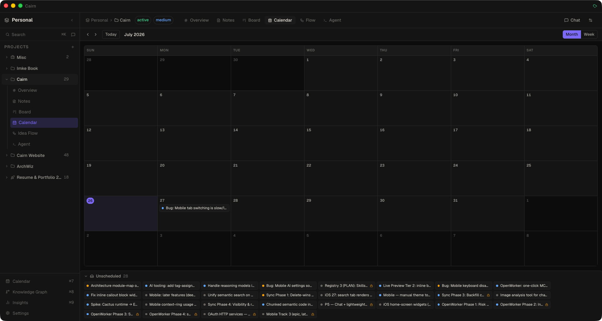

Calendar
A project-scoped calendar that lays out your task cards by due date. See what's overdue at a glance, drag tasks to reschedule them, and pull unscheduled work onto a day — all in the same drag-and-drop engine as the Kanban board.
Opening the calendar
The Calendar view is available per-project from the sidebar, from the top-bar tabs, and via ⌘4. Like the other views, you can hide or show it from Settings → General → Views.

Month & week layouts
- Month — a fixed six-week grid (stable height, no jumping between months), Sunday-start, with out-of-month days dimmed and today marked with an accent pill.
- Week — a single Sunday-start week for a tighter focus.
- Navigation — prev / next / today controls move the window.
Task chips use per-priority dot colours (urgent / high / medium / low) so you can scan a busy month quickly in both light and dark themes.
Drag to reschedule
Drag any task onto a different day to change its due date. It's an optimistic update that persists immediately and is fully undoable, powered by the same @dnd-kit engine as the board.
Overdue & unscheduled trays
- Overdue tray — a banner at the top lists every past-due open task in danger styling. Overdue tasks also still appear in their actual day cell, so scrolling back never shows an empty calendar. Drag one onto a day to reschedule it.
- Unscheduled tray — a collapsible tray lists tasks with no due date. Drag one onto a day to schedule it; drag a dated task back onto the tray to clear its due date.
Completed tasks (in a Done column) with a past due date are treated as finished — they're not flagged overdue and stay out of the overdue tray.
Day detail
Packed days show a +N more affordance that opens a modal listing every task due that day. Click any task to open its full card detail.
The same due-date data is available to the assistant. Ask "what's overdue?" or "what's due this week?" and it uses the list_overdue_tasks and list_tasks_due tools — the same overdue / due semantics as the calendar and board.